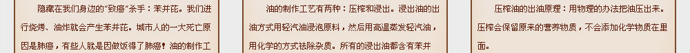

35%畸形新生儿与使用地沟油有关!
地沟油的毒性是砒霜的100倍!
街边餐馆80%采用地沟油 1、直接从餐馆收的泔水和地沟上漂浮的油物；
2、用劣质的猪内脏、猪皮加工的油；
3、地沟油属于三无产品,其主要成分是甘油三酯。
地沟油是健康的最大敌人，其中混有大量污水、垃圾和洗涤剂，一般无法除去有害菌和化学成分，食用后会导致腹泻、腹痛，甚至 肠癌、胃癌等疾病。
专家称：如果孕妇长期吃地沟油，35%新生儿有可能发育不良，畸形；如果老人长期吃地沟油，三高发病率提升60%，严重者会致癌。
去超市买食用油就安全吗？你是否注意过压榨油和浸出油的区别？你还在为家人买转基因油吗？很多食用油都含有一苯并芘，高科技的转基因有可能导致下一代畸形，浸出油采用化学手段榨取存在化学残留！
赶快改变吧！研究证实，化学浸出油需经过脱腊、脱水、脱臭、脱酸、脱色等化学处理后才能食用，经过多道化学处理，油脂中的部分天然成分被破坏，且有溶剂残留，会导致三高、心脑血管疾病、肥胖、降低了人的免疫力，造成各种亚健康症状，导致癌症高发。
同时，据报道，在德国有农民用转基因玉米喂养奶牛，牛开始剧烈腹泻并停止产奶、死亡；在巴西种植的转基因农作物，造成大量巴西妇女不育，不育率达44%。美国人餐桌上已经没有了转基因油，欧盟明令禁止食用，非洲诸多国家宁愿挨饿，也不吃转基因油！为什么？因为转基因油含有有害物质，过敏原，对抗生素有抵抗作用。

|
||||||
|  | ||||||
|
|
|
|||||
|
|
||||||
小分子榨油机由维美公司引进德国先进榨油技术，突破性将大开型智能榨油技术浓缩到微小电脑智能芯片上，机器名为内置双涡轮双压系统，不仅能将油脂快速挤出，高速转动形成的离心力还能将大分子油转换成六角小分子油，小分子油可以帮助清除体内残余毒素，体内的坏油清除了，身体隐患自然消失，保证越吃越健康，越用越放心！
维美榨油机纯物理压榨，能充分保留各种油料中的有效成分不被破坏，完整保存油中活性物质，而且有效杜绝酸、碱、盐、重金属及胆固醇等有害物质残留，从而保证油质清香，原汁原味。
采用天然食材， 榨出天然健康油，可以预防动脉硬化，心血管疾病，对高血脂，高血压、糖尿病等三高疾病有有效的预防作用，同时预防老年人骨质疏松，延缓衰老。
维美榨油机双涡轮双压系统，不仅能装油脂快速挤出，高速转动形成的离心力还能将大分子油转换成六角小分子油，小分子油可以帮助清除体内残余垃圾毒素，体内的坏油清除了，身体隐患自然消失 。
2、专业16道极限压榨，无需二次压榨，省时省电
3、使用寿命长达10年之久，每天折合5毛钱，换全家10年的健康体魄，非常超值
4、高端家用榨油机 唯一通过安全3C认证
5、一键全自动，无需翻炒，6分钟即榨
6、出油率高，出油效率百分之九十以上，堪比工业榨油比市面上桶装油便宜一半
7、节能省电、100w的功率、榨油一次只消耗半度电、比吹风机还省电
8、噪音低，不到60分贝远低于豆浆机
9、外观时尚新颖 体积小摆设方便
10、多种榨油模式可以根据不同人群的不同身体需求、榨出不同的养生油
俗称"长寿果"，还有丰富的萘氨酸、谷氨酸、卵磷脂、脑磷脂、儿茶素等十几种对人体有益的物质，可使儿童智力提高，促进脑细胞发育，有增强大脑的记忆功能，并且有效的防止人体的过早衰老，具有抗氧化作用。同时、特有的大量亚油酸，可以避免胆固醇在体内沉积，降低心脑血管疾病的发生率。
含有大量的脂肪和蛋白质，还有糖类、维生素A、维生素E、卵磷脂、钙、铁、镁等营养成分;其中亚油酸有调节胆固醇的作用、维生素E可以使皮肤白皙润泽，防止各种皮肤炎症，还具有养血的功效可以治疗皮肤干燥、粗糙、令皮肤细腻光滑、红润光泽。
中的磷脂，对脑神经又很好保健作用，核桃油含有不饱和脂肪酸、有防止动脉硬化的功效。核桃仁中含有锌、锰、鉻等人体不可缺少的微量元素、补脑益智，促进发育，时候脑力工作者，尤其是白领女性和小孩食用。
人体对菜仔油吸收率很高，可达到99%，因此他所含的亚油酸等不饱和脂肪酸，维生素E等营养成分能很好地被机体吸收，具有一定的软化血管，延缓衰老的功效，由于榨油的原料是是植物的种实，会含有一定的种子磷酸，对血管、神经、人脑的发育十分重要。
中粗蛋白、脂肪、总糖含量之和高达84.07%。亚麻籽蛋白质氨基酸种类齐全，必须含氨基酸量高达5.16%、十一种营养价值较高的植物蛋白质，亚麻仔油中a-亚麻酸含量为53%，a-亚麻酸是人体必须脂肪酸 有抗肿瘤、抗血栓、降血脂、营养脑细胞，调节植物神经作用。
所含单不饱和脂肪酸为诸多植物油之冠，长期使用、有利于降低血脂、低密度脂蛋白胆固醇，预防高血压，动脉粥样硬化等心脑血管疾病。同时，山茶籽油中含有一种生理活性成分角鲨，因而可抗缺氧和抗疲劳，并具有人体提高免疫力及增高胃肠道的功能。
有瑙醇，维生素、亚油酸等多种对人类有益的物质，其中天然维生素E含量在所有主要植物油中含量很高，可降低血清中胆固醇水平，降低甘油三水平，有降血压的作用，降低胆固醇，防止血管硬化和防止冠心病的作用。
有瑙醇，维生素、亚油酸等多种对人类有益的物质，其中天然维生素E含量在所有主要植物油中含量很高，可降低血清中胆固醇水平，降低甘油三水平，有降血压的作用，降低胆固醇，防止血管硬化和防止冠心病的作用。

对血脂代谢有温和的调和作用，清理粘附在血管壁上的LDL，是低密度蛋白升高，从而达到降低血脂，防止动脉粥样硬化的目的，@亚麻酸的代谢产物还可以扩张血管、增强血管弹性，所以还能降低高血压
含有瑙醇，维生素、亚油酸等多种对人体有益的物质，能降低血清中的胆固醇水平、降低甘油三水平，有将低血压的作用，它含有丰富的亚油酸，有显著降低胆固醇，防止血管硬化和防止冠心病的作用
促进脑发育、提高神经系统功能、提高智商、增强视力，
促进体格增长
含有丰富的赖氨酸、谷氨酸、卵磷脂、脑磷脂、儿茶素等十几种对人体有益物质，可使儿童智力提高。促进脑细胞发育有增强大脑的记忆功能、并且有效的防止人体的过早衰老、具有抗老化作用
婴幼儿使用核桃油互更容易吸收营养成分，多使用核桃油有助于胎儿的早期身体发育、对婴幼儿大脑发育极为重要，核桃油营养价值是大豆的8.05倍，花生的6倍，鸡蛋的12倍，牛奶的25倍肉类的10倍

自从怀了宝宝，老公马上买了一台维美榨油机，自己选料，自己亲手加工，榨出来的油又香又安全。只需要一按开关，电脑智能控制，半小时油就出来了，尤其适合孕妇吃的花生油，对幼儿发育非常有帮助，满屋子都是香的，再也不用担心吃地沟油了，使用更省心。
女儿吃惯了超市里的食用油，一开始吃用维美榨的油不习惯，其实自己动手榨出来的油特别天然，我们小时候就是吃这种油长大的，妈妈用来炸麻花，那叫一个香啊！现在大城市里很少有机会能吃到这种油了，自己动手榨出来的油对小孩智力，体质大有好处，现在女儿吃饭香了，个子都长高了！
我去年去德国考察啊！看见家家户户几乎都有一台榨油机，他们告诉我，吃自己榨出来的油才放心。回国以后，经过对比考察，给家里装了维美榨油机，没花多少钱，图个安心，没想到现在肠胃也越来越好，越来越喜欢回家吃饭了，难怪说这维美榨油机，榨出来的都是小分子油，对身体特别好，肯定坚持用下去！
去年春节，女儿送我一台维美榨油机，觉得乱花钱，谁知道用起来很简单，当时榨出来的油啊，特透亮，而且听说是小分子油，能把坏油全部带走，这样天天吃下去，肠胃的垃圾慢慢清理掉了，沉积在血管壁上的毒素也溶解掉了，高血脂，高血压等老年病自然好转了，最近老头子说我的白头发变少了，精神头特别好！
现在市面上单就一台冷榨机器售价在10000元左右，热榨机更贵，现在只需要1880元，就可以拥有一台至少使用10年的维美榨油机，一年平均198元，一天也就5毛钱，都不够我们每天上半小时网，打一个电话的钱，何况你是为家人做了一个10年的健康投资，绝对超值！
同时，大家自己算一算帐，去超市买一桶5L装的花生油，售价在135元——150元之间，平均一斤折合13元——15元，现在只需要花10元买两斤花生就可以榨出1斤油，至少生了3—5元！而且榨剩下的食材辅料你还可以做粥，钓鱼，养花等，一点也不会浪费。